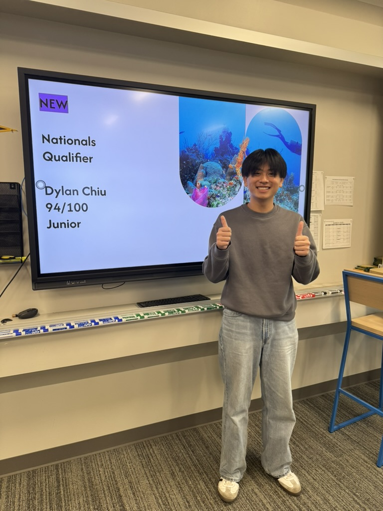
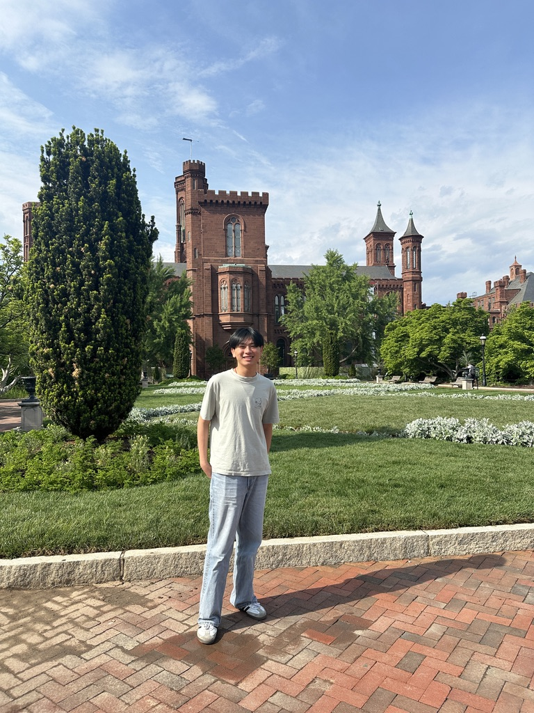
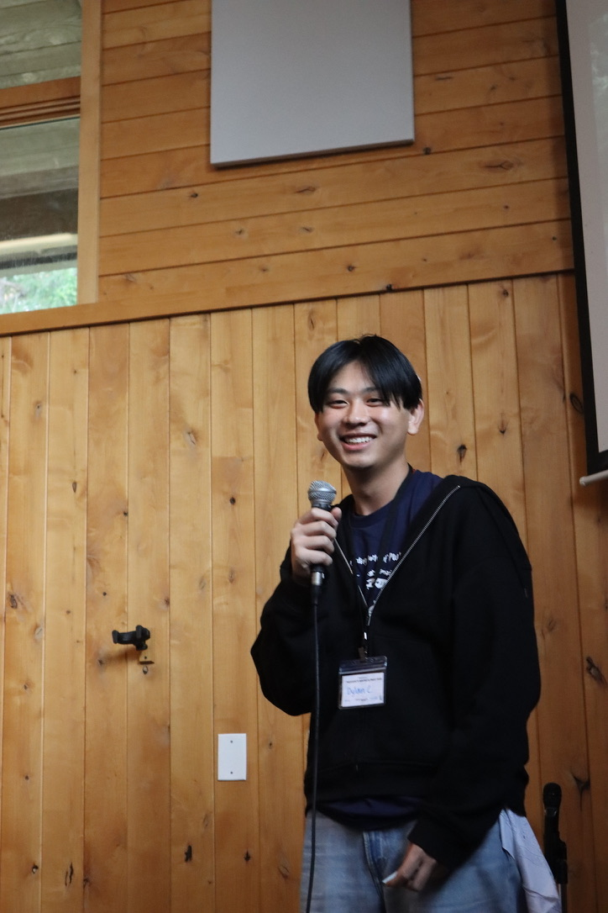
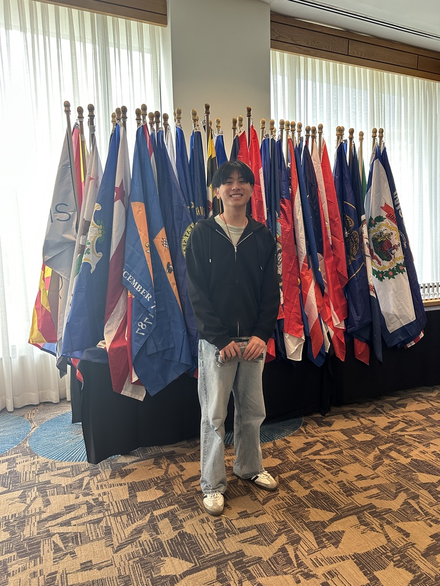
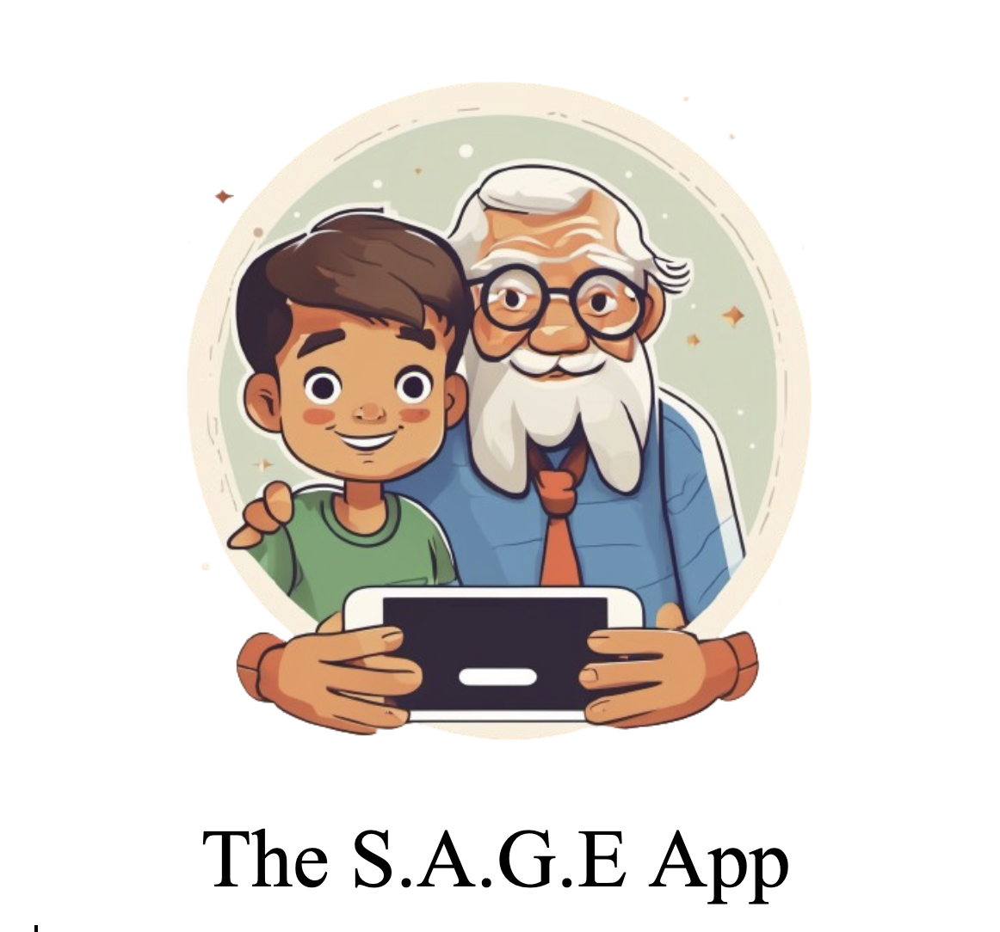

Academic Growth
Through projects, tests, and teamwork, I have learned a lot throughout my high school career, academically.
Dylan Chiu's Portfolio
A portfolio of my academic projects, resume, skills, and reflections.

Portfolio Highlight
The homepage of my portfolio displays my work at a glance and shows you what I have accomplished.

Overview

Through projects, tests, and teamwork, I have learned a lot throughout my high school career, academically.

I have included my resume which shows my skills and workplace experience.

Two complete projects with objectives, documentation, images, and reflections.
Projects
The projects took dedicated time and effort. They also required teamwork and cooperation in order to achieve the desired results. Go to Projects